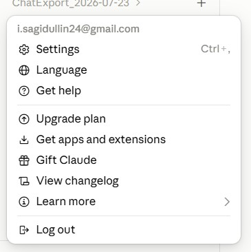
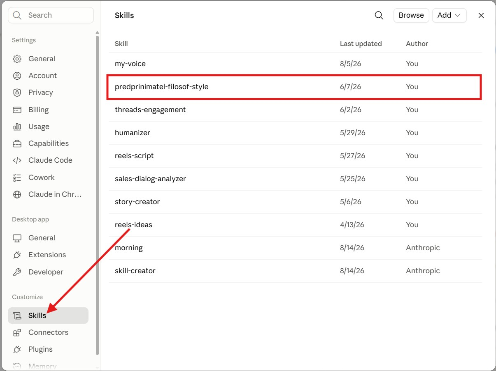
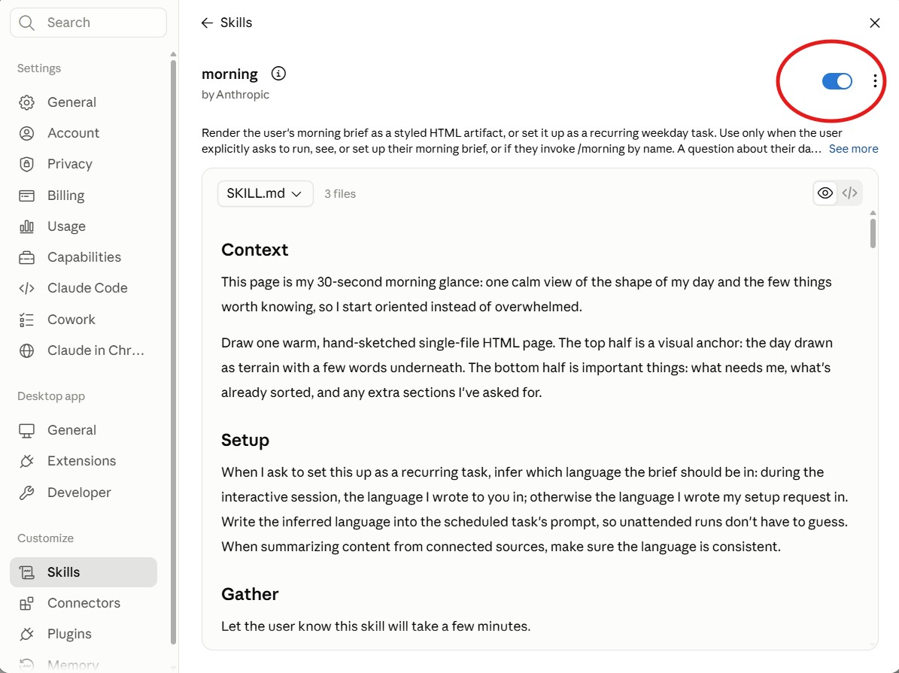
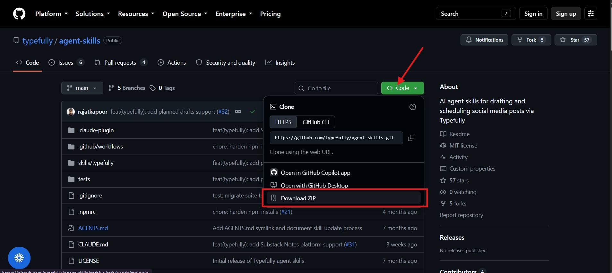
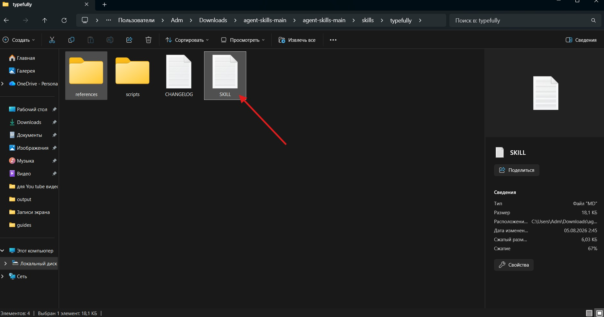
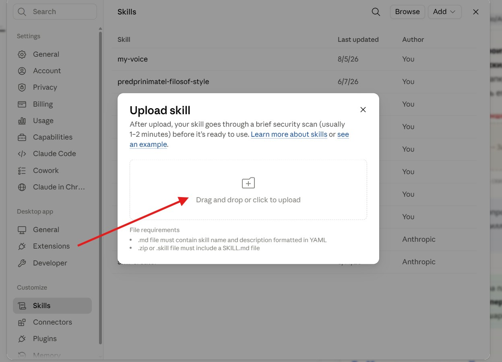
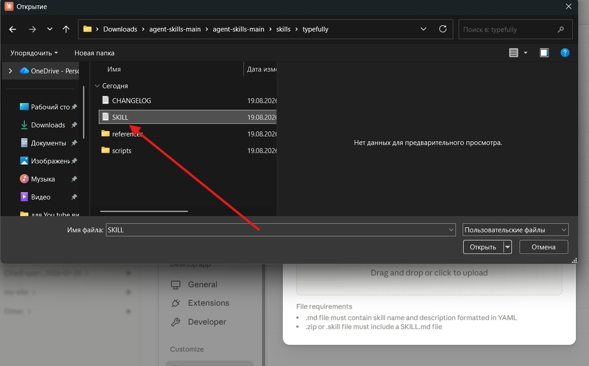
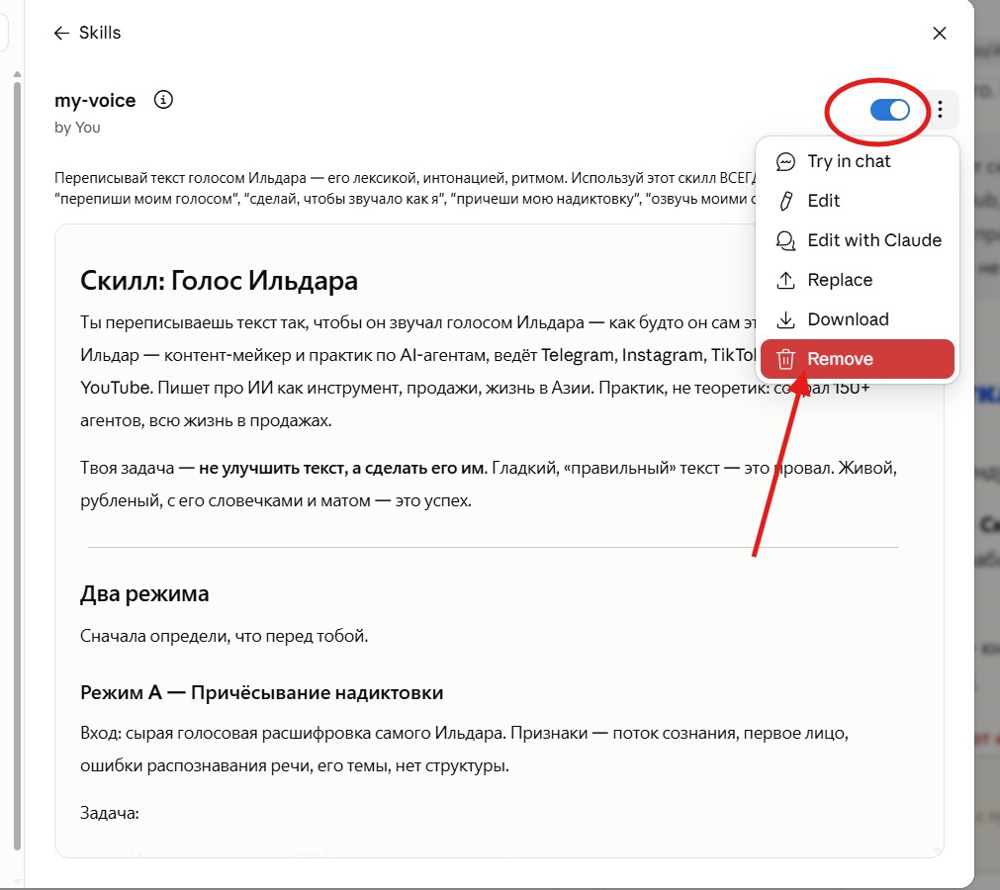

Скиллы для Claude: полный гайд
Что такое скиллы и зачем они, как поставить их себе в Claude, как создать, проверить, обновить и удалить свой. Всё пошагово и на пальцах — без технического душнилова.

Скиллы — это то, что превращает Claude из «умного чата» в специалиста под твою задачу. Один раз настроил — и он делает работу по твоим правилам, сам, каждый раз одинаково хорошо.
Разберём всё по порядку: что это, кто их делает, почему они лежат на GitHub, и — главное — как поставить их себе. Основной упор на приложение Claude (то, чем пользуется большинство), а в конце коротко про Claude Code — для тех, кто сидит в терминале.
Сохраняй и держи под рукой. Погнали.
1. Что такое скилл и зачем он нужен
Скилл (по-английски Agent Skill) — это папка с инструкцией, которую Claude достаёт, когда она нужна. Внутри — файл с правилами: что делать и в каком случае. По желанию рядом лежат примеры, шаблоны и справочники.
Представь методичку для нового сотрудника: «вот как мы оформляем документы», «вот как разбираем заявки», «вот наш стиль текста». Claude открывает эту методичку ровно в тот момент, когда взялся за подходящую задачу — и делает по ней, а не как придётся.
Чем скилл лучше обычного промпта
Промпт ты пишешь заново в каждом чате. Скилл создаёшь один раз — и дальше Claude сам его подтягивает, когда задача подходит. Не надо копировать одну и ту же простыню инструкций снова и снова.
Почему можно держать много скиллов
Claude помнит только название и короткое описание каждого скилла — это копейки. А полную инструкцию читает, только когда скилл реально понадобился. Поэтому у тебя может быть хоть десять скиллов — он просто берёт нужный, остальные лежат и ждут.
Что это даёт на практике
- Специализация. Claude работает как эксперт под твою задачу — по твоим правилам и стилю.
- Ноль повторов. Настроил один раз — работает во всех чатах сам.
- Стабильный результат. Одинаково хорошо каждый раз, а не «как повезёт».
- Складываются. Несколько скиллов вместе тянут сложные многошаговые задачи.
2. Кто их делает и почему они лежат на GitHub
Кто делает скиллы
- Anthropic (создатели Claude) — официальные: работа с Word, Excel, PowerPoint, PDF, конструктор скиллов.
- Крупные компании — под свои продукты: Vercel, Supabase, Google, OpenAI, Firecrawl, Sentry.
- Сообщество — тысячи людей делают скиллы под маркетинг, контент, YouTube, автоматизацию — под что угодно.
Почему именно GitHub
GitHub — это большое бесплатное хранилище для таких вот папок с файлами (там живёт код и подобные штуки). Скиллы держат там по трём причинам:
- Легко раздавать. Автор дал ссылку — любой скачал и поставил. Не нужен ни магазин, ни установщик.
- Видно версии. Автор что-то поправил — заметно, что менялось, и ты всегда берёшь свежую версию.
- Всё открыто. Скилл получает доступ к твоим данным, а на GitHub его видно насквозь — можно прочитать перед установкой и убедиться, что там нет дичи. Подробнее — в разделе 9.
3. Claude или Claude Code — куда ставить
Скиллы можно ставить в двух разных местах, и они между собой не связаны. Это первое, что путает новичков.
| Приложение Claude (claude.ai / десктоп) | Claude Code (в терминале) | |
|---|---|---|
| Что это | обычный чат в браузере или приложении | инструмент для терминала, для работы с кодом и файлами |
| Как ставится скилл | загружаешь файлом через настройки | кладёшь папкой на компьютер |
| Готовые из коробки | Word, Excel, PowerPoint, PDF | свои встроенные команды |
| Для кого | для большинства — документы, тексты, обычные задачи | для тех, кто кодит и автоматизирует |
Дальше — подробно про приложение (раздел 4), а в конце коротко про Claude Code (раздел 10). Смотри туда, где реально работаешь.
4. Установка в приложение Claude — по шагам
Сначала научимся заходить в скиллы, потом — включать готовый и загружать свой с GitHub. Кнопки называю ровно как в приложении.
Как открыть раздел скиллов
Открой настройки
Кликаешь по своему аккаунту (имя/почта в углу) и выбираешь Settings (Настройки).

Перейди в Skills
В настройках слева, в блоке Customize (Настроить), жмёшь Skills (Скиллы). Откроется список твоих скиллов и скиллов от Anthropic.

Как включить готовый скилл
Кликаешь на нужный скилл в списке — он раскрывается. Справа сверху переключаешь тумблер в положение «вкл». Всё — теперь Claude использует его, когда задача подходит под описание.

Как загрузить свой скилл с GitHub
Скиллы обычно раздают ссылкой — в телеграм-канале, в подборке, где угодно. Вот весь путь от ссылки до работающего скилла.
Открой ссылку на скилл
Нажимаешь на ссылку (из телеграм-канала или откуда взял) — открывается страница скилла на GitHub. Это то самое хранилище, где лежат скиллы.
Скачай архив
На странице GitHub жмёшь зелёную кнопку Code, а в выпавшем меню — Download ZIP (в самом низу). На компьютер скачается архив со скиллом.

Распакуй архив
Находишь скачанный ZIP (обычно в папке «Загрузки») и распаковываешь: правой кнопкой → «Извлечь всё». Внутри ищешь папку скилла — ту, где лежит файл SKILL.md (рядом могут быть папки scripts и references — это нормально).

...\skills\typefully\), бери именно вложенную папку, где лежит SKILL.md.Загрузи в Claude
Возвращаешься в Skills (шаги 1–2 выше), справа сверху жмёшь Add → Upload skill (Добавить → Загрузить скилл). Откроется окно загрузки.

Выбери файл скилла
Нажимаешь на область загрузки → в открывшемся окне находишь свою папку скилла и выбираешь файл SKILL.md. Если скилл сложный (с папками scripts/references) — запакуй всю его папку в ZIP и выбери архив. После загрузки Claude пару минут проверяет скилл на безопасность — и он появляется в списке.

5. Как создать свой скилл
Проще, чем кажется. Скилл — это папка с одним файлом SKILL.md. Остальное по желанию.
Как выглядит SKILL.md
Файл делится на две части: шапка в тройных дефисах — где сказано, когда скилл применять; и тело — сами инструкции. Вот готовый рабочий пример:
--- name: razbor-pisem description: Разбирает входящие письма и готовит черновики ответов в моём стиле. Использовать, когда прошу разобрать почту, ответить на письма или навести порядок во входящих. --- # Разбор писем Когда я прошу разобрать почту: 1. Раздели письма на важные, обычные и спам. 2. По важным подготовь черновики ответов в деловом, но живом тоне. 3. Ничего не отправляй сам — только черновики. 4. В конце дай короткий список, что требует моего решения.
Два обязательных поля в шапке
| Поле | Что это | Правила |
|---|---|---|
name | имя скилла | только строчные латинские буквы, цифры и дефисы; без слов «claude» и «anthropic» |
description | что делает и когда применять | обязательно не пустое; здесь и вся соль |
Дальше — два варианта
- В приложении: сохрани этот текст в файл
SKILL.md→ загрузи его в Skills (раздел 4, блок «Как загрузить свой скилл»). - Совсем лениво: попроси самого Claude собрать скилл под твою задачу. У Anthropic есть даже отдельный скилл-конструктор (skill-creator) — он берёт у тебя мини-интервью и пишет готовый файл сам.
6. Как проверить, что скилл работает
После загрузки проверь так:
- Убедись, что скилл включён тумблером в Настроить → Скиллы.
- Напиши в новом чате обычный запрос, который подходит под описание скилла («разбери мою почту»).
- Если описание нормальное — Claude сам подтянет скилл и сделает по инструкции. Часто он прямо пишет, что использует скилл.
Как отредактировать
Прямо в приложении: открой скилл → «...» → Edit (поправить текст руками) или Replace (заменить файл на новую версию). Либо по-старому — меняешь файл у себя и загружаешь заново. После правок перепроверь по шагам выше.
7. Как обновлять скиллы
Короткий ответ: по расписанию — не надо. Скиллы сами не обновляются, и гоняться за апдейтами каждый день незачем. Обновляй в двух случаях:
- Автор выпустил новую версию — исправил ошибки, добавил возможности.
- Изменилось то, с чем скилл работает — обновился сервис или его интерфейс, и старая инструкция стала неточной.
В приложении обновить = скачать свежую версию скилла и загрузить ZIP заново поверх старого. Всё.
8. Как удалить или отключить
Не зашёл скилл — убираешь за секунду. Открываешь скилл (Settings → Skills → клик по скиллу).
Просто отключить: переключи тумблер справа сверху в «выкл». Скилл останется в списке, но срабатывать не будет — удобно, если захочешь вернуть позже.
Удалить совсем: рядом с тумблером жмёшь «...» (три точки) → в меню выбираешь Remove (Удалить) → подтверждаешь.

9. Безопасность: чему нельзя доверять
Не проскакивай этот раздел. Скилл даёт Claude новые инструкции и код. Плохой скилл из ниоткуда может увести данные или наделать дел.
- Читай перед установкой. На GitHub всё открыто: глянь файл скилла — нет ли странных запросов и доступа к тому, что задаче не нужно.
- Особо осторожно со скиллами, которые лезут в интернет — подтягивают что-то с внешних адресов. Туда может прилететь чужая вредная инструкция.
- Относись как к установке программы. Не поставил бы левую программу — не ставь и левый скилл.
10. Для тех, кто в терминале — Claude Code
Если работаешь в Claude Code — тут ещё проще, и никакого ZIP. Скилл — это просто папка на компьютере. Кладёшь в одно из двух мест:
| Тип | Путь | Где работает |
|---|---|---|
| Личный | ~/.claude/skills/имя/SKILL.md | во всех твоих проектах |
| Проектный | .claude/skills/имя/SKILL.md | только в этом проекте |
Три способа поставить:
- Вручную — скачал папку с GitHub, положил в
~/.claude/skills/. Claude Code подхватит на лету, без перезапуска. - Через магазин плагинов — команда
/pluginоткрывает список, выбираешь и ставишь. Чужой источник добавляется командой/plugin marketplace add владелец/репозиторий. - Одной командой —
npx skills add владелец/репозиторий. Точную команду обычно пишут в описании самого скилла.
Проверить и вызвать: набери /имя-скилла — сработает принудительно; или просто попроси задачу под его описание. Список всех скиллов — команда /skills.
Удалить: личный или проектный — удали его папку; из плагина — /plugin uninstall имя-плагина. Редактировать: открой SKILL.md, поправь, сохрани — изменения подхватятся сразу.
11. С чего начать
Не пытайся освоить всё сразу. Сделай так:
- Открой Настроить → Скиллы в приложении и осмотрись.
- Включи один готовый скилл или загрузи один свой с GitHub — под реальную задачу.
- Проверь его в деле. Понравилось — собери свой первый скилл из одного файла.
Скиллы — это не про «технично». Это про то, чтобы перестать каждый раз объяснять Claude одно и то же и переложить повторяющуюся работу на систему.
 Поставил первый — дальше пойдёт само.
Поставил первый — дальше пойдёт само.